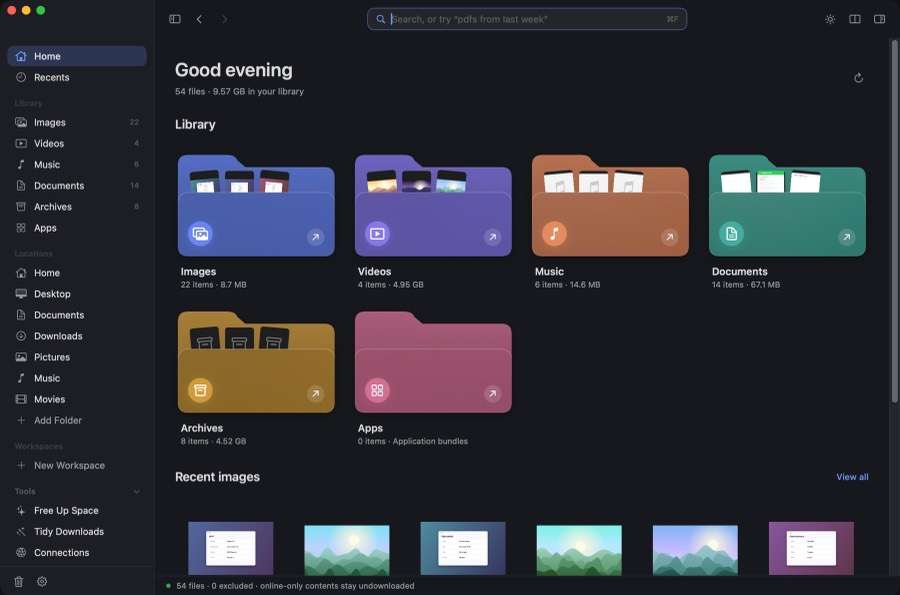

MacEx vs Finder: which to use for finding files?
Updated
Feature by feature
| Task | Finder & macOS | MacEx |
|---|---|---|
| Find a file you can’t place | PartlySpotlight search, with filters added from menus or search operators. | YesType “pdfs from last week over 5 mb”; MacEx shows how it read your words as filters you can edit. |
| See everything by kind | PartlyRecents, plus smart folders you set up yourself. | YesOne library of images, videos, music, documents, archives and apps across your folders. |
| Preview without opening | YesQuick Look with Space. | YesSpace previews in the same window; arrow keys move to the next file. |
| Copy text from images | YesLive Text, one image at a time. | YesCopy Text from up to 20 images or PDFs at once, using on-device recognition. |
| Search words inside screenshots | PartlySpotlight indexes some image text. | YesOptional on-device text index, e.g. “screenshots with wifi password”. |
| Free up space | PartlySystem Settings › Storage suggests large files and downloads. | YesOld installers, forgotten downloads, old screenshots, big old videos and empty files, each with a review step before Trash. |
| Find duplicate files | NoNot in Finder (the Photos app only checks its own library). | YesExact copies confirmed byte for byte; similar photos grouped separately. |
| Know where a download came from | PartlyGet Info shows “Where from” for one file at a time. | YesAll downloads grouped by website, and searchable (“pdfs from gmail”). |
| Tidy the Downloads folder | NoManual, or Stacks on the Desktop only. | YesOne click sorts files into folders; ⌘Z puts them back. |
| Restore trashed files | YesPut Back from the Trash. | YesHistory of the last 500 files MacEx moved to Trash, with their original folders. |
| Browse servers over SFTP | NoConnect to Server supports SMB and others, not SFTP. | YesBrowse, upload and download over SFTP after checking the server’s identity. |
| Search from any app | YesSpotlight with ⌘Space. | YesQuick Search with ⇧⌘Space. |
| Price | Built in, free. | $9.99 one-time (launch price), no subscription. |
When Finder is enough
- You mostly work inside a few folders you already know.
- You remember file names, so Spotlight finds things quickly.
- Your Mac has plenty of free space.
When MacEx helps
- You remember what a file was (“that invoice from Gmail last month”) but not its name or folder.
- Your Downloads folder is a pile, and you want to know what came from where.
- You’re low on space and want to see what’s safe to clear, including duplicates, without deleting anything blindly.
- You work with servers over SFTP and want them in the same window as your files.
How MacEx differs from other Finder alternatives
Most apps sold as Finder replacements, such as ForkLift, Path Finder, Commander One and QSpace, are file managers built around moving files: two panes side by side, tabs, batch rename and connections to remote servers. They suit people who copy and sync files all day.
MacEx starts from a different problem: finding and clearing out files when you don’t know where they are. It gathers your files into one library by kind, lets you search by describing a file, shows where each download came from, and frees up space with a review step. It still covers the everyday file-manager basics: Split View with copy or move to the other pane (F5, F6), new folders, rename, Trash with restore, and SFTP. If dual-pane power features are your main need, a dedicated file manager is a better fit; if “where did that file go?” is, MacEx is.

Does MacEx replace Finder?
No. MacEx reads your existing folders and leaves the files where they are. Double-clicking a file opens it in its usual app, and anything you remove goes to the normal Trash, where Finder can still put it back. Many people keep Finder for folder work and use MacEx to find, preview and clean up.
Related
MacEx runs on macOS 14 or later, Apple silicon and Intel. One-time purchase, no account.